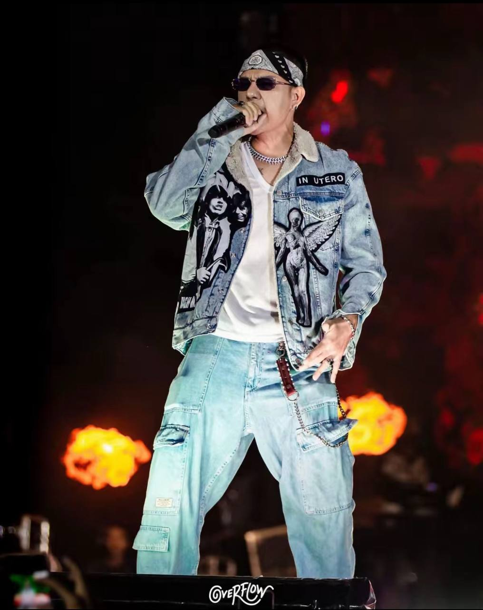

|  | |
| Name | Hlwan Paing |
|---|---|
| Other Names | MC Hlwan Paing, Bo Paing Gyi |
| Born | 1 March 1989 (age 36) Taunggyi, Myanmar |
| Nationality | Burmese |
| Alma mater | Technological University(Taunggyi) |
| Occupations | Singer, songwriter, rapper, actor, gaming-streamer |
| Height | 5 ft 7 in (1.70 m) |
| Relatives | Kyaw Hsu(brother) |
| Genres | Hip Hop |
|---|---|
| Instruments | Vocals |
| Years active | 2005-Present |
Hlwan Paing was born on 1 March 1989 in Taunggyi, Shan State, Myanmar.He is the youngest son of three siblings. His elder brother Kyaw Hsu is also an actor.He graduated from Technological University, Thanlyin.
Hlwan Paing began his career as part of the underground group "89" while still in school, collaborating on songwriting and vocals. Subsequently, he was approached by Ah Boy, the leader of the RockStar group, and was invited to become the final member of RockStar.Since then, Hlwan Paing has begun collaborating with mainstream artists. Renowned for his distinctive approach to music creation, songwriting, and rap delivery, he became known as Myanmar's sole recognized twister, showcasing his unique flair for rapid-fire lyrical delivery. In 2009, Hlwan Paing was selected as one of the highlighted artists for Ye Lay's track "Ma Nhoute Sat Chin Bu" (Do Not Want To Say Good Bye), featured on the album "Tat Ta Ya Kar Yan" (Third Rhyme), where he showcased his hip-hop rap skills.He catapulted to fame in the music scene with his smash hits "Done Pyan" and "Bo Kay," both featured on the "Done Pyan" album. Additionally, tracks like "Uptown Girl," linked with Yair Yint Aung, "A Girl of a Boy," associated with Bunny Phyoe, and "The Letter For Friend," released as a single, gained widespread popularity among teenage audiences. On November 21, 2011, he released the collaborative album Done Pyan (Rocket) alongside his partner Bobby Soxer, which included songs like "Done Pyan" and "Bo Kay." Done Pyan received the prestigious "Best Music Album Award" from both Shwe FM and City FM.[citation needed] Hlwan Paing and Bobby Soxer donated 1 million Myanmar kyats from the proceeds of a gold prize to support orphan children through the Thu Kha Yike Myone charity organization.[citation needed] Hlwan Paing delved into commercial advertisements, stage performances, and concerts across Myanmar. He collaborated with Bobby Soxer and Eaint Chit on the song "Ko Ko," which went on to win the esteemed "Best Music Award" at the Shwe FM Music Award. On June 8, 2014, Hlwan Paing unveiled his debut solo album titled "Gi Ta Sar So Hlwan Paing." Following this success, the follow-up video album was released on February 12, 2016. One of the tracks from that album, "Min Ye Kyaw Swar Bo Nay Toe," was subsequently adapted into a film. He released his second solo album, "Gita Bay Da" on 24 June 2017.
Hlwan Paing was appointed as brand ambassador of Ve Ve on February 28, 2015, and also as brand ambassador of Vivo-Y55 smart phone in 2016.
Solo Albums
| Year | Title |
|---|---|
| 2014 | Gi Ta Sar So Hlwan Paing |
| 2017 | Gita Bay Da |
| 2023 | Heartbreak Anniversary |
Duo Album
| Year | Title | Featuring |
|---|---|---|
| 2011 | Done Pyan | Bobby Soxer |
| Award | Year | Recipient(s) and nominee(s) | Category | Result |
|---|---|---|---|---|
| City FM awards | 2014 | Hlwan Paing | "Most Popular Male Vocalist Award of Year" | Won |
| 2017 | Gita Bay Da | "Best Selling Stereo Music Album Male Vocalist of the Year" | Won | |
| Shwe FM awards | 2013 | Done Pyan | "Best Selling Album of Year" | Won |
| 2014 | Gi Ta Sar So Hlwan Paing | Won | ||
| Myanmar Music Awards | 2014 | Ko Ko | "Best Rap Song of the Monsoon (Artist Choice Award)" | Won |
| "Freshest Rap Song of the Monsoon (People Choice Award)" | Won | |||
| Ngar Doe Way | "Best MTV Award" | Won |